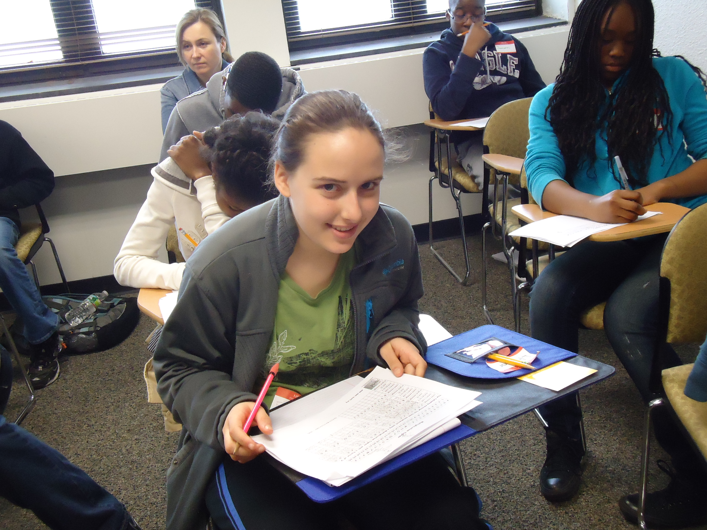
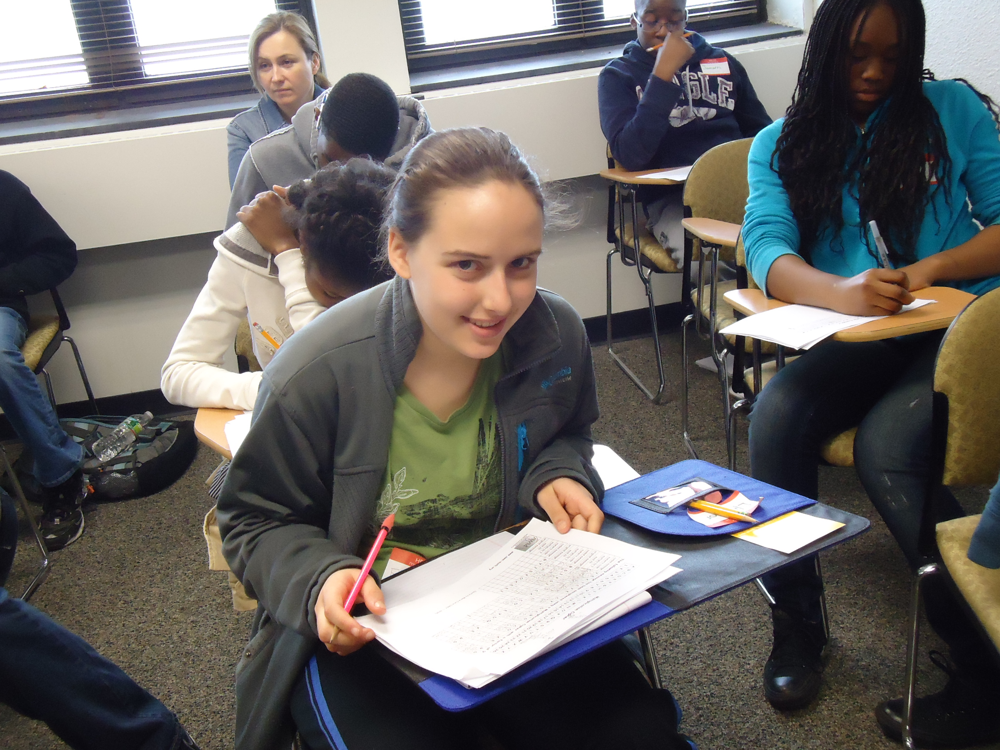
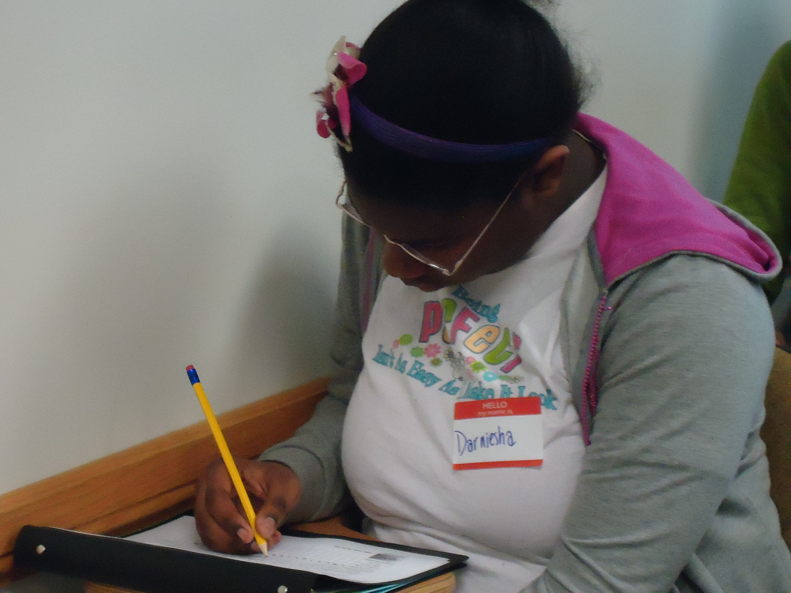
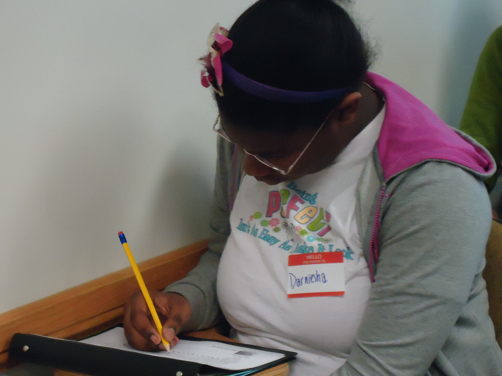

Temple University Mathematics Circle
|
The Mathematics Circle is at full capacity and no longer accepts applications for Spring 2012
Spring 2012
Meeting on selected Saturdays 10:00-11:30 AM, room 617 Wachman Hall
Description:
This free of charge Mathematics Circle program (held on selected
Saturdays, 10:00am-11:30am) is designed to provide
middle school students with a variety of engaging mathematical experiences
focused on extending their understanding and knowledge in mathematics.
Topics include: divisibility, modular arithmetic, introduction to
cryptography, introduction to probability, and geometry.
|
 


 

Background:
The Math Circle program focuses on enabling participants to build
self-belief and mathematical confidence, on encouraging and nurturing
excellence in mathematics and sciences, and on providing exposure to
expert mathematical training and accomplished professionals who may
serve as role models and mentors for the students. The goals of the
Temple University Mathematics Circle are:
-
to show the middle school students that the study of mathematics
can be exciting, beautiful and useful;
-
to build confidence in students' mathematical knowledge through engaging and
quality
mathematical instruction;
-
to introduce the middle school students to a variety of career
opportunities for which sophisticated mathematical ability
plays a key role;
- to emphasize the strategic role mathematics plays for
success in STEM careers;
-
to provide the participants with a support group and competent mentors
which are successful undergraduate, graduate students and professionals from
the STEM workforce;
-
to ultimately shape the way students view themselves and their mathematical interest and ability.
|
Mentors and Instructors: Mentors and instructors for the program are undergraduate
and graduate students in STEM disciplines at Temple University.
Organizers: Irina Mitrea and Maria Lorenz
.
Program Contact:
Irina Mitrea, 215-204-6741; imitrea@temple.edu
|